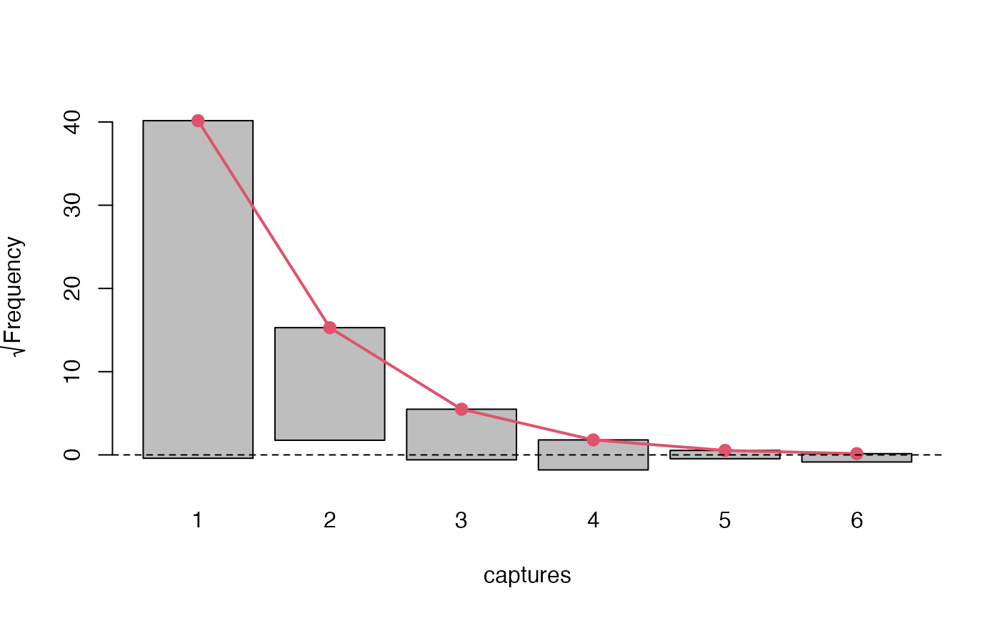

Performs two statistical test on observed and fitted marginal frequencies. For G test the test statistic is computed as: \[G = 2\sum_{k}O_{k}\ln{\left(\frac{O_{k}}{E_{k}}\right)}\] and for \(\chi^{2}\) the test statistic is computed as: \[\chi^{2} = \sum_{k}\frac{\left(O_{k}-E_{k}\right)^{2}}{E_{k}}\] where \(O_{k},E_{k}\) denoted observed and fitted frequencies respectively. Both of these statistics converge to \(\chi^2\) distribution asymptotically with the same degrees of freedom.
The convergence of \(G, \chi^2\) statistics to \(\chi^2\) distribution may be violated if expected counts in cells are too low, say < 5, so it is customary to either censor or omit these cells.
Arguments
- object
object of singleRmargin class.
- df
degrees of freedom if not provided the function will try and manually but it is not always possible.
- dropl5
a character indicating treatment of cells with frequencies < 5 either grouping them, dropping or leaving them as is. Defaults to drop.
- ...
currently does nothing.
Value
A chi squared test and G test for comparison between fitted and observed marginal frequencies.
Examples
# Create a simple model
Model <- estimatePopsize(
formula = capture ~ .,
data = netherlandsimmigrant,
model = ztpoisson,
method = "IRLS"
)
plot(Model, "rootogram")

# We see a considerable lack of fit
summary(marginalFreq(Model), df = 1, dropl5 = "group")
#> Test for Goodness of fit of a regression model:
#>
#> Test statistics df P(>X^2)
#> Chi-squared test 50.06 1 1.5e-12
#> G-test 34.31 1 4.7e-09
#>
#> --------------------------------------------------------------
#> Cells with fitted frequencies of < 5 have been grouped
#> Names of cells used in calculating test(s) statistic: 1 2 3